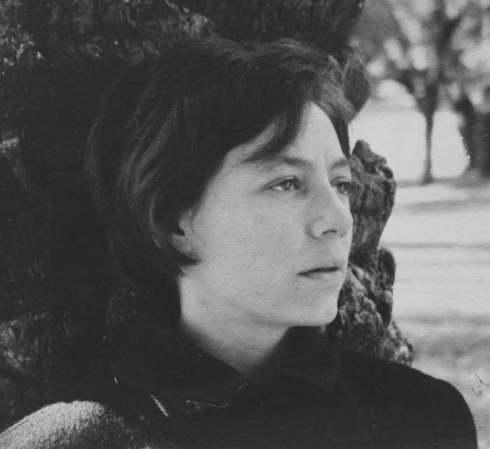
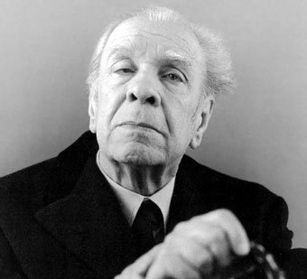
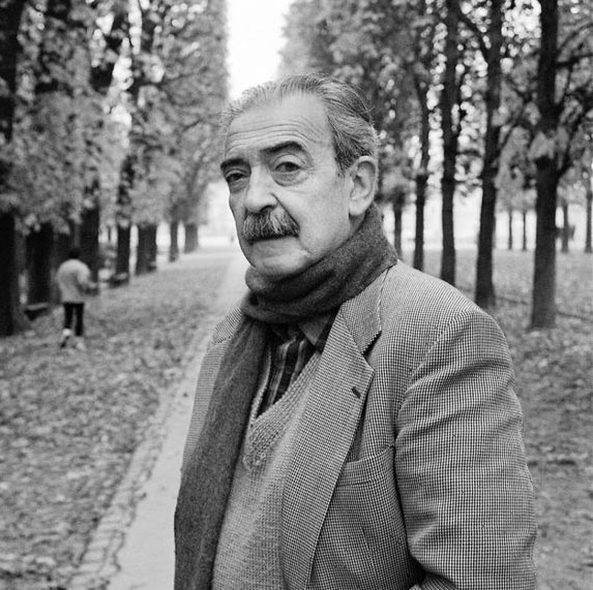

Alejandra Pizarnik

DÍAS CONTRA EL ENSUEÑO
No querer blancos rodando
en planta movible.
No querer voces robando
semillosas arqueada aéreas.
No querer vivir mil oxígenos
nimias cruzadas al cielo.
No querer trasladar mi curva
sin encerar la hoja actual.
No querer vencer al imán
la alpargata se deshilacha.
No querer tocar abstractos
llegar a mi último pelo marrón.
No querer vencer colas blandas
los árboles sitúan las hojas.
No querer traer sin caos
portátiles vocablos.
Despedida
Mata su luz un fuego abandonado.
Sube su canto un pájaro enamorado.
Tantas criaturas ávidas en mi silencio
y esta pequeña lluvia que me acompaña
Jorge Luis Borges

Ajedrez
I
En su grave rincón, los jugadores
rigen las lentas piezas. El tablero
los demora hasta el alba en su severo
ámbito en que se odian dos colores.
Adentro irradian mágicos rigores
las formas: torre homérica, ligero
caballo, armada reina, rey postrero,
oblicuo alfil y peones agresores.
Cuando los jugadores se hayan ido,
cuando el tiempo los haya consumido,
ciertamente no habrá cesado el rito.
En el Oriente se encendió esta guerra
cuyo anfiteatro es hoy toda la Tierra.
Como el otro, este juego es infinito.
II
Tenue rey, sesgo alfil, encarnizada
reina, torre directa y peón ladino
sobre lo negro y blanco del camino
buscan y libran su batalla armada.
No saben que la mano señalada
del jugador gobierna su destino,
no saben que un rigor adamantino
sujeta su albedrío y su jornada.
También el jugador es prisionero
(la sentencia es de Omar) de otro tablero
de negras noches y de blancos días.
Dios mueve al jugador, y éste, la pieza.
¿Qué Dios detrás de Dios la trama empieza
de polvo y tiempo y sueño y agonía?
Juan Gelman

Ausencia de amor
Cómo será pregunto.
Cómo será tocarte a mi costado.
Ando de loco por el aire
que ando que no ando.
Cómo será acostarme
en tu país de pechos tan lejano.
Ando de pobre cristo a tu recuerdo
clavado, reclavado.
Será ya como sea.
Tal vez me estalle el cuerpo todo lo que he esperado.
Me comerás entonces dulcemente
pedazo por pedazo.
Seré lo que debiera.
Tu pie. Tu mano.
Certezas
A ver cómo es.
Estaba quieta la inquietud por una vez.
La desazón en sazón y
¡cómo se parecía el mundo a Gerarda
envuelta en sensaciones de encaje!
Las palabras chocan contra la tarde
y no la descomponen.
La furia no me deja solo conmigo.
Habrá que recortar la sombra militar.
¡Camaradas especialistas en esperar cansancios:
apaguen el amor dudoso
que baja humilde y despacito!
Hasta el revés del cosmos morirá!